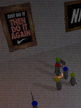

<!DOCTYPE html><html lang="en"><head><meta charset="utf-8"><meta http-equiv="X-UA-Compatible" content="IE=edge"><meta name="viewport" content="width=device-width, initial-scale=1"><!-- The above 3 meta tags *must* come first in the head; any other head content must come *after* these tags--><title>Sutas's Portfolio</title><!-- Latest compiled and minified CSS--><link rel="stylesheet" href="https://maxcdn.bootstrapcdn.com/bootstrap/3.3.7/css/bootstrap.min.css"><link href="https://maxcdn.bootstrapcdn.com/font-awesome/4.7.0/css/font-awesome.min.css" rel="stylesheet" integrity="sha384-wvfXpqpZZVQGK6TAh5PVlGOfQNHSoD2xbE+QkPxCAFlNEevoEH3Sl0sibVcOQVnN" crossorigin="anonymous"><link rel="stylesheet" href="https://cdnjs.cloudflare.com/ajax/libs/bootstrap-social/5.1.1/bootstrap-social.min.css" integrity="sha256-rFMLRbqAytD9ic/37Rnzr2Ycy/RlpxE5QH52h7VoIZo=" crossorigin="anonymous"><!-- favicon from http://www.freefavicon.com/freefavicons/objects/iconinfo/wood-box-152-194864.html--><link rel="icon" type="image/x-icon" href="favicon.ico"><!-- HTML5 shim and Respond.js for IE8 support of HTML5 elements and media queries--><!-- WARNING: Respond.js doesn't work if you view the page via file://--><!--[if lt IE 9]>
<script src="https://oss.maxcdn.com/html5shiv/3.7.2/html5shiv.min.js"></script>
<script src="https://oss.maxcdn.com/respond/1.4.2/respond.min.js"></script>
<![endif]--><link rel="stylesheet" href="style.css"></head></html><body><div class="container"><div class="row" id="title"><div class="col-md-12"><div class="page-header"><h1 id="headtext">Hello!<small>What kind of work you're looking for from my portfolio?</small><p class="text-right" id="headback"><a class="btn btn-primary btn-social btn-linkedin" href="http://kennyzero.me/"><i class="fa fa-linkedin-square" aria-hidden="true"></i> More professional works on linked.in</a></p></h1></div></div></div><div class="row" id="filter"><div class="col-md-3 filter" data-filtertype="tag-phphtmljs"><h2>Website</h2><p>   PHP is a number one web development language.
   Together with HTML and Javascript, it brings the world of
   world wide web to its current state nowadays.</p></div><div class="col-md-3 filter" data-filtertype="tag-cppcs"><h2>C++ and C#</h2><p>   Everyone knows that C++ is fast. But to achieve that speed,
   you need to dive deep into the unknown. C#, in the other hand,
   make many development techniques viable for an average programmer.</p></div><div class="col-md-3 filter" data-filtertype="tag-gamedev"><h2>Game Dev</h2><p>   I love games, and that's why I choose to study game development.
   It's a midway between aesthetic and technological advancement.
   One can not make a great game that doesn't run,
   and one can not make a perfect game that doesn't appeal.</p></div><div class="col-md-3 filter" data-filtertype="tag-future"><h2>Professional</h2><p>   Explore how variety of technology being used in a professional
   manner to make a real-world applications that are robust,
   scalable, and future-proof. TL;DR: Python, Node.js, React, Redux
   are awesome!</p></div></div><div class="row" id="filter2"><div class="col-md-12">   Also:<button class="btn btn-primary filter" data-filtertype="tag-freelance">Freelance</button><button class="btn btn-success filter" data-filtertype="tag-classwork">Classwork</button><button class="btn btn-info filter" data-filtertype="tag-hobby">Hobby</button></div></div><hr><div class="work tag-gamedev tag-classwork"><div class="row"><div class="col-md-2"></div><div class="col-md-10"><h3>Iconic Encounter</h3><div><span class="label label-danger"><span class="glyphicon glyphicon-tower" aria-hidden="true"></span> Game Development</span> <span class="label label-success"><span class="glyphicon glyphicon-education" aria-hidden="true"></span> Classwork</span> </div><br/><div class="description"><p>   Iconic Encounter is a fighting game with well-known character.
   Join the fight with John Lennon, Audrey Hepburn, Teddy Roosevelt, or Mahatma Gandhi.
   Aim at a casual gamer, control is simple for one to enjoy, yet deep enough for an experienced player to benefit from.
   Throw an opponent out of the stage, and victory shall be yours.</p><p>   Iconic Encounter is a graduate-level capstone project.
   It's developed by Katryna Check, Corey Kuchynka, Deandre Chenshaw, Joshua Servin, and myself
   under a supervision of<a href="http://www.brianschrank.com/">Asst Prof Brian Schrank, PhD</a>   .</p><p>   Contribution: Gameplay, Shader, and UI Programming</p></div><div class="links"><a class="btn btn-primary" href="http://www.quintforcedev.com/current-build">Website</a><a class="btn btn-default" href="https://www.youtube.com/watch?v=9F8QeLj3BA8">Video from Spring Showcase</a></div></div></div><br/><hr/></div><div class="work tag-phphtmljs tag-freelance"><div class="row"><div class="col-md-2"></div><div class="col-md-10"><h3>DKS Digitalkeystore.co.th</h3><div><span class="label label-default"><span class="glyphicon glyphicon-cloud" aria-hidden="true"></span> PHP, HTML, and JS</span>  </div><br/><div class="description"><p>   Digitalkeystore is Thailand's number one game and gaming peripherals
   online retailer. It uses many automated systems to reduce wasted time
   on both customer and server side.
   In 2013, I wrote a system that automated order fulfillment process.
   As of now, I'm a part-time
   Software Engineer overseeing website technical aspect.</p></div><div class="links"><a class="btn btn-primary" href="https://dks.in.th/">Storefront</a><a class="btn btn-default" href="http://digitalkeystore.co.th/">Corporate Site</a></div></div></div><br/><hr/></div><div class="work tag-phphtmljs tag-hobby"><div class="row"><div class="col-md-2"></div><div class="col-md-10"><h3>Yearbeast Tracker</h3><div><span class="label label-default"><span class="glyphicon glyphicon-cloud" aria-hidden="true"></span> PHP, HTML, and JS</span> <span class="label label-info"><span class="glyphicon glyphicon-heart" aria-hidden="true"></span> Hobby Project</span> </div><br/><div class="description"><p>    New Bloom is a yearly event in<a href="http://blog.dota2.com/">Dota 2</a>   . In 2015, this event allows players to join a special game mode during
   the year beast active time (20 minutes every 2-3 hours).
   Yearbeast Tracker is built to solve many problems, namely</p><ol><li>Allow estimate time of next year beast (became obsolete half-way through event)</li><li>Allow player to track the beast without opening Dota 2</li><li>Allow external services to benefit from tracking data (such as message alert to phone)</li></ol><p>   Through its lifespan of 3 weeks, it serves over 600,000 users with over
   20 million page views (According to Google Analytics). The cost of this operation,
   surprisingly, is under $50.</p></div><div class="links"><a class="btn btn-primary" href="http://2015.yearbeast.com/">Main site</a><a class="btn btn-default" href="https://github.com/bongikairu/yearbeast2015">Git Repo</a></div></div></div><br/><hr/></div><div class="work tag-phphtmljs tag-classwork"><div class="row"><div class="col-md-2"></div><div class="col-md-10"><h3>iNoteSlide</h3><div><span class="label label-default"><span class="glyphicon glyphicon-cloud" aria-hidden="true"></span> PHP, HTML, and JS</span> <span class="label label-success"><span class="glyphicon glyphicon-education" aria-hidden="true"></span> Classwork</span> </div><br/><div class="description"><p>   iNoteSlide is a cross-platform annotation sharing system aims to integrate technology into
   the ever-changing world of study. It gives students an option to take note directly on learning
   materials on their tablet computer. This system is developed with JavaScript, HTML, and CSS,
   and use PhoneGap as a base framework. It can be deployed on any tablet running iOS or Android,
   but requires connection to the server in order to do some task.</p><p>   This project is an undergrad-level capstone project. The development team consists of<a href="https://th.linkedin.com/pub/attaphon-predaboon/42/684/211/th">Attaphon Predaboon</a>   , Sorawit Jaroenbenjawong, and myself under a supervision of<a href="http://www.cp.eng.chula.ac.th/~somchai/index0.htm">Assoc Prof Dr. Somchai Prasitjutrakul</a>   .</p><p>   Contribution: Client side (HTML and Javascript), System Design</p></div><div class="links"><a class="btn btn-primary" href="https://drive.google.com/file/d/0B9t-pfvf5EFpanFWX2laRGlYVjA/view?usp=sharing">Presentation Slide</a></div></div></div><br/><hr/></div><div class="work tag-cppcs tag-gamedev tag-classwork"><div class="row"><div class="col-md-2"></div><div class="col-md-10"><h3>In-house Game Engine</h3><div><span class="label label-warning"><span class="glyphicon glyphicon-tasks" aria-hidden="true"></span> C++ and C#</span> <span class="label label-danger"><span class="glyphicon glyphicon-tower" aria-hidden="true"></span> Game Development</span> <span class="label label-success"><span class="glyphicon glyphicon-education" aria-hidden="true"></span> Classwork</span> </div><br/><div class="description"><p>   In Ed Keenan's Game Engine class, students are given a task to build a full-fledged game engine in C++.
   It's composed of many subsystem, namely Math Engine (Vector, Matrix, and Quaternion), Rendering System, and Object Manager.
   Each part can be swapped in and out easily.</p><p>   In the second part of the class, students upgrade their engine to support loading of models with animation.</p></div><div class="links"><a class="btn btn-primary" href="http://www.cdm.depaul.edu/academics/pages/classinfo.aspx?Term=20152&amp;ClassNbr=20192&amp;fid=718577">Class Website</a><a class="btn btn-default" href="https://www.youtube.com/watch?v=YC8LyJmrKDw">Presentation Video 1</a><a class="btn btn-default" href="https://www.youtube.com/watch?v=8p7cg4UDcKw">Presentation Video 2</a></div></div></div><br/><hr/></div><div class="work tag-cppcs tag-gamedev tag-classwork"><div class="row"><div class="col-md-2"></div><div class="col-md-10"><h3>Network-enabled Omega Race</h3><div><span class="label label-warning"><span class="glyphicon glyphicon-tasks" aria-hidden="true"></span> C++ and C#</span> <span class="label label-danger"><span class="glyphicon glyphicon-tower" aria-hidden="true"></span> Game Development</span> <span class="label label-success"><span class="glyphicon glyphicon-education" aria-hidden="true"></span> Classwork</span> </div><br/><div class="description"><p>   In Ed Keenan's Game Networking class, students are tasked with converting an Omega Race X
   (ported version of<a href="http://en.wikipedia.org/wiki/Omega_Race">Omega Race</a>   , an arcade game by Midway)
   into a network-enabled multiplayer game. It uses Windows Live for base networking.</p></div><div class="links"><a class="btn btn-primary" href="http://www.cdm.depaul.edu/academics/pages/classinfo.aspx?Term=20143&amp;ClassNbr=30494&amp;fid=718577">Class Website</a><a class="btn btn-default" href="https://www.youtube.com/watch?v=Y5MZ7-oLWcE">Presentation Video</a></div></div></div><br/><hr/></div><div class="work tag-cppcs tag-gamedev tag-classwork"><div class="row"><div class="col-md-2"></div><div class="col-md-10"><h3>Optimization of C++ Particle System</h3><div><span class="label label-warning"><span class="glyphicon glyphicon-tasks" aria-hidden="true"></span> C++ and C#</span> <span class="label label-danger"><span class="glyphicon glyphicon-tower" aria-hidden="true"></span> Game Development</span> <span class="label label-success"><span class="glyphicon glyphicon-education" aria-hidden="true"></span> Classwork</span> </div><br/><div class="description"><p>   In Ed Keenan's optimization class, students are given a particle system.
   The goal is to make this particle system fast. Many technique is employed to solve this problem, such as</p><ol><li>Hot-Cold data structure</li><li>SIMD</li><li>Return Value Optimization</li><li>Implicit Conversion striping</li><li>Proxy Object</li></ol><p>   The final product increase speed by 2x (10x for calculation). It renders a vortex of 20k particles under 10 ms, with calculation taken only 1 ms.</p></div><div class="links"><a class="btn btn-primary" href="http://www.cdm.depaul.edu/academics/pages/classinfo.aspx?Term=20151&amp;ClassNbr=17026&amp;fid=718577">Class Website</a><a class="btn btn-default" href="https://www.dropbox.com/s/zymd56dr7oj2ozl/GameParticles.rar?dl=0">Final Project Executable Download</a></div></div></div><br/><hr/></div><div class="work tag-cppcs tag-gamedev tag-hobby"><div class="row"><div class="col-md-2"></div><div class="col-md-10"><h3>Web-based Valve's Source Model Viewer (WIP DOA)</h3><div><span class="label label-warning"><span class="glyphicon glyphicon-tasks" aria-hidden="true"></span> C++ and C#</span> <span class="label label-danger"><span class="glyphicon glyphicon-tower" aria-hidden="true"></span> Game Development</span> <span class="label label-info"><span class="glyphicon glyphicon-heart" aria-hidden="true"></span> Hobby Project</span> </div><br/></div></div><br/><hr/></div><div class="description"></div><p></p>   Web-based model viewer that accepts Valve's Source format (MDL, VVD, VMT, VTF). Written in C++ and converted to Asm.js using Emscripten.<p class="text-danger">   Work in progress.</p><div class="links"><a class="btn btn-danger" href="http://104.236.208.106/app/raw.html">Dev site</a></div><div class="work tag-gamedev tag-classwork"><div class="row"><div class="col-md-2"></div><div class="col-md-10"><h3>[VR] MockBand</h3><div><span class="label label-danger"><span class="glyphicon glyphicon-tower" aria-hidden="true"></span> Game Development</span> <span class="label label-success"><span class="glyphicon glyphicon-education" aria-hidden="true"></span> Classwork</span> </div><br/><div class="description"><p>   MockBand is a VR karaoke game. It uses both head tracking and audio input to provide
   feedback in a virtual world.</p><p>   Contribution: Core Gameplay Programming (Voice detection, Head motion gameplay, and Lyrics sync syntax)</p></div><div class="links"><a class="btn btn-primary" href="https://www.youtube.com/watch?v=2NyhvdtCaCs">Video</a><a class="btn btn-default" href="https://www.dropbox.com/s/yboaup8747z84hy/Mockband-0.95.rar?dl=0">Executable Download</a></div><div class="footnote"><br><small>   This game is a part of<a href="http://brianschrank.com/vrgames/">VR Game class</a></small></div></div></div><br/><hr/></div><div class="work tag-gamedev tag-classwork"><div class="row"><div class="col-md-2"></div><div class="col-md-10"><h3>[VR] DayGround</h3><div><span class="label label-danger"><span class="glyphicon glyphicon-tower" aria-hidden="true"></span> Game Development</span> <span class="label label-success"><span class="glyphicon glyphicon-education" aria-hidden="true"></span> Classwork</span> </div><br/><div class="description"><p>   DayGround is a VR game that aims to provide alternate reality to the player. Its use of vibrant color and lack of shadow
   gives the player an unconventional experience.</p><p>   Contribution: Core Gameplay Programming</p></div><div class="links"><a class="btn btn-primary" href="https://www.youtube.com/watch?v=XnNrcCkM-UQ">Video</a><a class="btn btn-default" href="https://www.dropbox.com/s/yz64bekclpop8mm/DayGround-0.6-NoOVR.rar?dl=0">Executable Download (Non-VR)</a></div><div class="footnote"><br><small>   This game is a part of<a href="http://brianschrank.com/vrgames/">VR Game class</a></small></div></div></div><br/><hr/></div><div class="work tag-gamedev tag-classwork"><div class="row"><div class="col-md-2"></div><div class="col-md-10"><h3>[VR] Last night</h3><div><span class="label label-danger"><span class="glyphicon glyphicon-tower" aria-hidden="true"></span> Game Development</span> <span class="label label-success"><span class="glyphicon glyphicon-education" aria-hidden="true"></span> Classwork</span> </div><br/><div class="description"><p>   Last Night is a VR game that aims to induce player into an altered state.
   Player starts the game lying down. He or she will then wake up in this VR world
   being sucked into a black hole in the sky. Player has an option to explore the
   surrounding (by only moving his/her head). The game ends when player reaches the black hole.</p><p>   Contribution: Core Gameplay Programming, Game Design</p></div><div class="links"><a class="btn btn-primary" href="http://youtu.be/xRgkkozEoqY">Video</a><a class="btn btn-default" href="https://www.dropbox.com/s/paw79qv9jjbggrg/LastNightBuild-1.0.zip?dl=0">Executable Download</a></div><div class="footnote"><br><small>   This game is a part of<a href="http://brianschrank.com/vrgames/">VR Game class</a></small></div></div></div><br/><hr/></div><div class="work tag-gamedev tag-classwork"><div class="row"><div class="col-md-2"></div><div class="col-md-10"><h3>[VR] Prey</h3><div><span class="label label-danger"><span class="glyphicon glyphicon-tower" aria-hidden="true"></span> Game Development</span> <span class="label label-success"><span class="glyphicon glyphicon-education" aria-hidden="true"></span> Classwork</span> </div><br/><div class="description"><p>   Prey is a VR game that put players into an eye of wildlife. Player can choose to pose either a rabbit or an eagle.
   There's no solid goal in this game.</p><p>   Contribution: Core Gameplay Programming</p></div><div class="links"><a class="btn btn-primary" href="https://www.youtube.com/watch?v=xyziS1Jqa48">Video</a><a class="btn btn-default" href="https://www.dropbox.com/s/8kkgf5n8gjxsd5s/PreyOut-1.1.zip?dl=0">Executable Download</a></div><div class="footnote"><br><small>   This game is a part of<a href="http://brianschrank.com/vrgames/">VR Game class</a></small></div></div></div><br/><hr/></div><div class="work tag-gamedev tag-classwork"><div class="row"><div class="col-md-2"></div><div class="col-md-10"><h3>[ART] Rend</h3><div><span class="label label-danger"><span class="glyphicon glyphicon-tower" aria-hidden="true"></span> Game Development</span> <span class="label label-success"><span class="glyphicon glyphicon-education" aria-hidden="true"></span> Classwork</span> </div><br/><div class="description"><p>   Rend is a game that let a player controls the size of platforms they're in contact.
   Player has to navigate the puzzle world using this trick to reach an exit.</p><p>   Contribution: Core Gameplay Programming</p></div><div class="links"><a class="btn btn-primary" href="https://www.dropbox.com/s/8jtw0opldlmkzbr/Rend-v1.0final.zip?dl=0">Executable Download</a></div><div class="footnote"><br><small>   This game is a part of<a href="http://www.artgamedev.com/">Art Game class</a></small></div></div></div><br/><hr/></div><div class="work tag-gamedev tag-classwork"><div class="row"><div class="col-md-2"></div><div class="col-md-10"><h3>[ART] Sweatshop Hero</h3><div><span class="label label-danger"><span class="glyphicon glyphicon-tower" aria-hidden="true"></span> Game Development</span> <span class="label label-success"><span class="glyphicon glyphicon-education" aria-hidden="true"></span> Classwork</span> </div><br/><div class="description"><p>   Sweatshop Hero is about making money. Your employee, however, is still a human and their performance drop over time.
   You can motivate them to raise their performance, but this will reduce their happiness.
   A worker with low happiness has a faster performance drop rate.
   When their happiness reach the floor, they rebel.
   Your only choice is that you kill them. However, their colleagues are not happy about this.
   And you know what will happen next...</p><p>   Contribution: Core Gameplay Programming</p></div><div class="links"><a class="btn btn-primary" href="https://www.youtube.com/watch?v=f1ReduVsDYg">Video</a><a class="btn btn-default" href="https://www.dropbox.com/s/hot73jpmibb3q72/Sweatshop-v1.0final.zip?dl=0">Executable Download</a></div><div class="footnote"><br><small>   This game is a part of<a href="http://www.artgamedev.com/">Art Game class</a></small></div></div></div><br/><hr/></div><div class="work tag-gamedev tag-classwork"><div class="row"><div class="col-md-2"></div><div class="col-md-10"><h3>[ART] Insanity Out</h3><div><span class="label label-danger"><span class="glyphicon glyphicon-tower" aria-hidden="true"></span> Game Development</span> <span class="label label-success"><span class="glyphicon glyphicon-education" aria-hidden="true"></span> Classwork</span> </div><br/><div class="description"><p>   The game of balance. Too many drugs and you die. Too little drugs and you also die.</p><p>   Contribution: Core Gameplay Programming, Game Design, Sound Design</p></div><div class="links"><a class="btn btn-primary" href="https://www.youtube.com/watch?v=eZzReLWqRPk">Video</a><a class="btn btn-default" href="https://www.dropbox.com/s/9czyqh6vyk2s2yd/InsanityOut-v1.0final.zip?dl=0">Executable Download</a></div><div class="footnote"><br><small>   This game is a part of<a href="http://www.artgamedev.com/">Art Game class</a></small></div></div></div><br/><hr/></div><div class="work tag-gamedev tag-classwork"><div class="row"><div class="col-md-2"></div><div class="col-md-10"><h3>[ART] Sarkhan</h3><div><span class="label label-danger"><span class="glyphicon glyphicon-tower" aria-hidden="true"></span> Game Development</span> <span class="label label-success"><span class="glyphicon glyphicon-education" aria-hidden="true"></span> Classwork</span> </div><br/><div class="description"><p>   You've become the prime minister of Sarkhan country. It's time to gain the money
   you'd spent on election campaign back. You are given choices of campaigns to run.
   Each one affects different groups of people and produces different amount of money.
   Make the most before your reign ends!</p><p>   Contribution: (Solo project) Game Design, Gameplay and UI Programming</p></div><div class="links"><a class="btn btn-primary" href="https://www.youtube.com/watch?v=7N6CL1t6sYk">Video</a><a class="btn btn-default" href="https://www.dropbox.com/s/2m0ru5u8arospji/Sarkhan-Win32-Final.zip?dl=0">Executable Download</a></div><div class="footnote"><br><small>   This game is a part of<a href="http://www.artgamedev.com/">Art Game class</a></small></div></div></div><br/><hr/></div><div class="work tag-gamedev tag-classwork"><div class="row"><div class="col-md-2"></div><div class="col-md-10"><h3>[ART] Jet Drop</h3><div><span class="label label-danger"><span class="glyphicon glyphicon-tower" aria-hidden="true"></span> Game Development</span> <span class="label label-success"><span class="glyphicon glyphicon-education" aria-hidden="true"></span> Classwork</span> </div><br/><div class="description"><p>   Jet Drop is a game that let you control a prototype jet board with 4 thrusters.
   On the controller, Right Shoulder, Left Shoulder, Right Analog Stick, and Left Analog Stick each control one thruster.
   Your goal is to reach the bottom without slamming into the wall.</p><p>   Contribution: (Solo project) Game Design, Gameplay and UI programming</p></div><div class="links"><a class="btn btn-primary" href="https://www.youtube.com/watch?v=jUTPQrYE8-k">Video</a><a class="btn btn-default" href="https://www.dropbox.com/s/96sl6lrs8yolzpo/JetPackRace-v1.0final.zip?dl=0">Executable Download</a></div><div class="footnote"><br><small>   This game is a part of<a href="http://www.artgamedev.com/">Art Game class</a></small></div></div></div><br/><hr/></div><div class="work tag-gamedev tag-freelance"><div class="row"><div class="col-md-2"></div><div class="col-md-10"><h3>Last Stand, Mini Game Project for DKS Arcade</h3><div><span class="label label-danger"><span class="glyphicon glyphicon-tower" aria-hidden="true"></span> Game Development</span>  </div><br/><div class="description"><p>   Last Stand is a shoot-em-up survival style game. You shoot down an enemy ship before it reaches you and kills you.
   Special enemy spawns after player reach a certain point. If player still survives, the difficulty increases and
   the whole process is restarted.</p><p>   Contribution: (Solo project) Game Design, Gameplay and UI programming</p></div><div class="links"><a class="btn btn-primary" href="https://www.youtube.com/watch?v=5j8BAg4eFNk">Video</a></div></div></div><br/><hr/></div><footer>   By the way, this website is also in HTML and JS category. It's written in Jade and compiled into HTML.
   You could<a href="https://github.com/bongikairu/bongikairu.github.io"> read its source here</a>   .</footer><br></div><!-- jQuery (necessary for Bootstrap's JavaScript plugins)--><script src="https://ajax.googleapis.com/ajax/libs/jquery/1.11.2/jquery.min.js"></script><!-- Include all compiled plugins (below), or include individual files as needed--><!-- Latest compiled and minified JavaScript--><script src="https://maxcdn.bootstrapcdn.com/bootstrap/3.3.4/js/bootstrap.min.js"></script><!-- tracking--><!-- Start of Woopra Code--><script>(function () {
    var t, i, e, n = window, o = document, a = arguments, s = "script", r = ["config", "track", "identify", "visit", "push", "call", "trackForm", "trackClick"], c = function () {
        var t, i = this;
        for (i._e = [], t = 0; r.length > t; t++)(function (t) {
            i[t] = function () {
                return i._e.push([t].concat(Array.prototype.slice.call(arguments, 0))), i
            }
        })(r[t])
    };
    for (n._w = n._w || {}, t = 0; a.length > t; t++)n._w[a[t]] = n[a[t]] = n[a[t]] || new c;
    i = o.createElement(s), i.async = 1, i.src = "//static.woopra.com/js/t/5.js", e = o.getElementsByTagName(s)[0], e.parentNode.insertBefore(i, e)
})("woopra");

woopra.config({
    domain: 'kennyzero.me'
});
woopra.track();</script><!-- End of Woopra Code--><!-- page js--><script>$(function () {
    $('.filter').click(function () {
        if ($(this).hasClass('active')) {
            $('.work').fadeIn('fast');
            $('.filter').removeClass('inactive').removeClass('active');

            if (woopra) woopra.track("filter", {
                ftag: "none"
            });
        } else {
            var tag = $(this).attr('data-filtertype');
            if(tag=='tag-future') {
                window.location = 'https://linkedin.com/in/snakasawek/'
                return;
            }
            $('.work:not(' + tag + ')').fadeOut('fast');
            $('.work.' + tag).fadeIn('fast');
            $('.filter').addClass('inactive').removeClass('active');
            $(this).removeClass('inactive');
            $(this).addClass('active');

            if (woopra) woopra.track("filter", {
                ftag: tag
            });
        }
    });
});
</script></body>